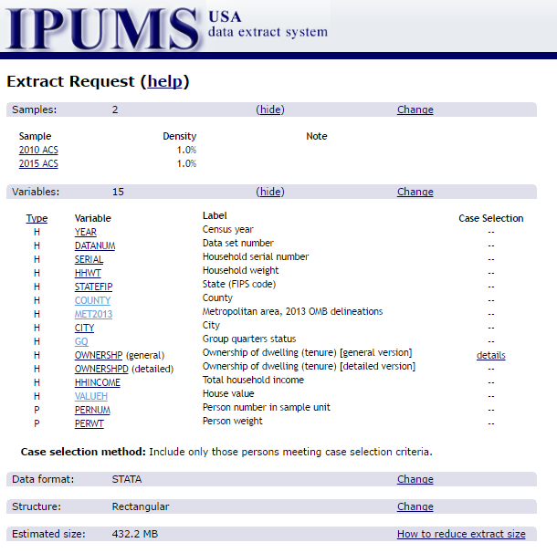

EARLEIR TODAY I HAPPENED ACROSS AN INTERESTING post by Ken Steif ([twitter @kensteif](https://twitter.com/KenSteif)) at the Urban Spatial Analysis blog that predicts gentrification using census data.
Do take some time to check out the post.
There’s a bunch to unpack in the post, but for today I just want to talk about house values. Ken’s post looks at the evolution of house values within a metro area over time. There are some nice graphics in the post, but I thought I would add some additional graphics.
For this post, we’re going to use American Community Survey (ACS) from 2010 and 2015 and compare how owner-reported housing values have shifted. While we could download the public use microdata direct from Census, instead we’ll us the Integrated Public Use Microdata (IPUMS).
The data
For this exercise we will download all the owner-occupied houses within several top metros for 2010 and 2015 respectively. IPUMS is nice because it allows us to only select the variables we need and we can subset the data as well. Unfortunately, the IPUMS data does not come in R format. So we’ll download the data using a Stata (!) format and covert it.
Fortunately we won’t have to use Stata (or SAS), but can open the Stata data using the haven package.
Let’s take a quick look. at how our IPUMS selections look:

We’ve only selected a few key variables, particularly valueh that captures the value of the house and met2013 that captures the Metro area of the housing unit (based on 2013 OMBS defintions).
Notice that the file size is not tiny at over 400 MB. However, we’ll be using data table and shrinking the data as we go.
Reading data and subsetting
The data file I selected was a Stata file. You can also select SAS or a flat text file. But the labeling for the Stata file worked best for me. I sometimes use SAS, but haven’t used Stata for many years. Fortunately, with haven we’ll be able to read the data into R without even having Stata.
library(data.table)
library(tidyverse)
library(ggbeeswarm)
library(viridis)
df<-haven::read_dta("data/usa_00005.dta")
dt<-data.table(df)I have saved the data as a file called usa_00005.dta in my data directory. I also want to convert the data into a data table. These data are a representative sample of the entire United States, but for this exercise I’m going to restrict the data to the top 30 metro areas.
We could look the metro areas up using a Census table, but instead, let’s use data table and some math to calculate it in sample:
pop.list<-dt[year==2015, list(pop=sum(perwt,na.rm=T)),by=c("met2013")][order(-pop)]
#print top 15 metros by population:
head(pop.list,12)## met2013 pop
## 1: 0 46848437
## 2: 35620 10691973
## 3: 31080 6552885
## 4: 16980 6157159
## 5: 19100 4307370
## 6: 37980 4191255
## 7: 26420 4026172
## 8: 47900 3798025
## 9: 12060 3517086
## 10: 33100 3496804
## 11: 14460 3049447
## 12: 19820 2938696That looks reasonable, but unfortunately we only have the metro numbers, not the names. The IPUMS output contains a Stata .do file that has the CBSA codes, or we could look them up. Fortunately, I have a simple lookup file cbsanames.txt that has the names. We can merge it onto our list:
cbsa.list<-fread("data/cbsanames.txt")
pop.list<-merge(cbsa.list,pop.list,by.x="cbsa.code",by.y="met2013")
head(pop.list[order(-pop)],12)## cbsa.code cbsa.name
## 1: 35620 New York-Newark-Jersey City, NY-NJ-PA Metro Area
## 2: 31080 Los Angeles-Long Beach-Anaheim, CA Metro Area
## 3: 16980 Chicago-Naperville-Elgin, IL-IN-WI Metro Area
## 4: 19100 Dallas-Fort Worth-Arlington, TX Metro Area
## 5: 37980 Philadelphia-Camden-Wilmington, PA-NJ-DE-MD Metro Area
## 6: 26420 Houston-The Woodlands-Sugar Land, TX Metro Area
## 7: 47900 Washington-Arlington-Alexandria, DC-VA-MD-WV Metro Area
## 8: 12060 Atlanta-Sandy Springs-Roswell, GA Metro Area
## 9: 33100 Miami-Fort Lauderdale-West Palm Beach, FL Metro Area
## 10: 14460 Boston-Cambridge-Newton, MA-NH Metro Area
## 11: 19820 Detroit-Warren-Dearborn, MI Metro Area
## 12: 38060 Phoenix-Mesa-Scottsdale, AZ Metro Area
## pop
## 1: 10691973
## 2: 6552885
## 3: 6157159
## 4: 4307370
## 5: 4191255
## 6: 4026172
## 7: 3798025
## 8: 3517086
## 9: 3496804
## 10: 3049447
## 11: 2938696
## 12: 2703208Note that our data is already subset to only include homeowners, so the population we’re counting here is the number of people in homeowner households, which will give a slightly different ranking than if we weighted by total people.
Make some graphs
Now that we have our data, let’s make some graphs. Let’s first compare how the distribution of owner-reported house values shifted from 2010 to 2015. When using these data we have to be careful to remember that we have sample data. Census provides weights, so we’ll have to be sure to weight the statsitics we use.
Let’s revisit the beeswarm graphs we made last year to compare distributions.
First let’s subset the data to only include the top 12 metro areas (by our population table).
dt2<-merge(dt,cbsa.list,by.x="met2013",by.y="cbsa.code")
dt.x<-dt2[cbsa.name %in% pop.list[order(-pop)]$cbsa.name[1:12] &
pernum==1] #pernum==1 restricts the observations to householdsLet’s compare how house values have shifted from 2010 to 2015 with a beeswarm plot:
# First we need to subsample the data.
dt.s<-dt.x[,.SD[sample(.N,min(.N,2000),prob=hhwt)],by = c("year","cbsa.name") ] #subsample metro data
# See note: sample by groups
# http://stackoverflow.com/questions/27325656/how-do-you-sample-groups-in-a-data-table-with-a-caveat
ggplot(data=dt.s,aes(y=factor(year),x=valueh,color=log(valueh)))+
geom_quasirandom(alpha=0.5,size=0.35)+
theme_minimal()+
scale_color_viridis(name="House Value\n$,log scale\n",discrete=F,option="D",end=0.95,direction=-1,
limits=c(log(10000),log(1.4e6)),
breaks=c(log(10000),log(100000),log(1e6)),
labels=c("$10k","$100k","$1,000k") ) +
scale_x_log10(limits=c(10000,1.4e6),breaks=c(10000,100000,1000000),
labels=c("$10k","$100k","$1,000k") )+
theme(plot.title=element_text(size=14))+
theme(plot.caption=element_text(hjust=0,vjust=1,margin=margin(t=10)))+
theme(plot.margin=unit(c(0.25,0.25,0.25,0.25),"cm"))+
theme(legend.position = "top")+
labs(y="",x="House Value ($, log scale)",
caption="@lenkiefer Source: U.S. Census 1-year American Community Survey (2010 & 2015),\nIPUMS-USA, University of Minnesota, www.ipums.org.",
title="House value distribution by metro area")+
theme(axis.text.x = element_text(size=6))+coord_flip()+
facet_wrap(~cbsa.name,ncol=3)+theme(strip.text.x = element_text(size = 6))## Warning: Transformation introduced infinite values in continuous x-axis## Warning: Removed 78 rows containing missing values (position_quasirandom).## Warning: Removed 107 rows containing missing values (position_quasirandom).## Warning: Removed 71 rows containing missing values (position_quasirandom).## Warning: Removed 73 rows containing missing values (position_quasirandom).## Warning: Removed 97 rows containing missing values (position_quasirandom).## Warning: Removed 85 rows containing missing values (position_quasirandom).## Warning: Removed 231 rows containing missing values (position_quasirandom).## Warning: Removed 101 rows containing missing values (position_quasirandom).## Warning: Removed 145 rows containing missing values (position_quasirandom).## Warning: Removed 76 rows containing missing values (position_quasirandom).## Warning: Removed 119 rows containing missing values (position_quasirandom).## Warning: Removed 98 rows containing missing values (position_quasirandom).## Warning: Removed 7 rows containing missing values (geom_point).
This graph shows the distribution of house values by metro and compares 2010 to 2015. We can see that the shapes of the distributions remain roughly constant, but values seem to be increasing from 2010 to 2015, which is consistent with generally rising prices over that time period.
Let’s catch our breath
Whew! Just organizing these data and getting them ready took a bit of work. Let’s pause and catch our breath. There’s a whole lot more that we can do with these data.
In future we’ll see what else we can glean from these housing data.